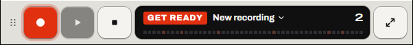
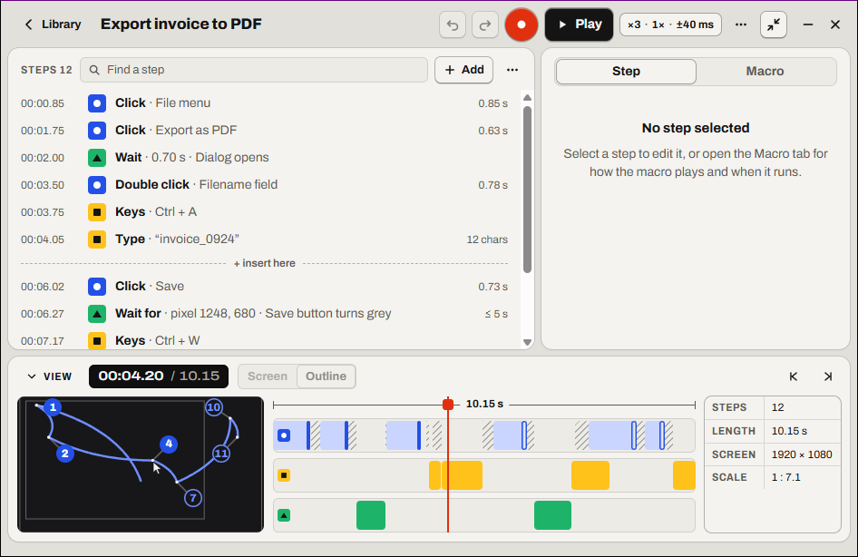
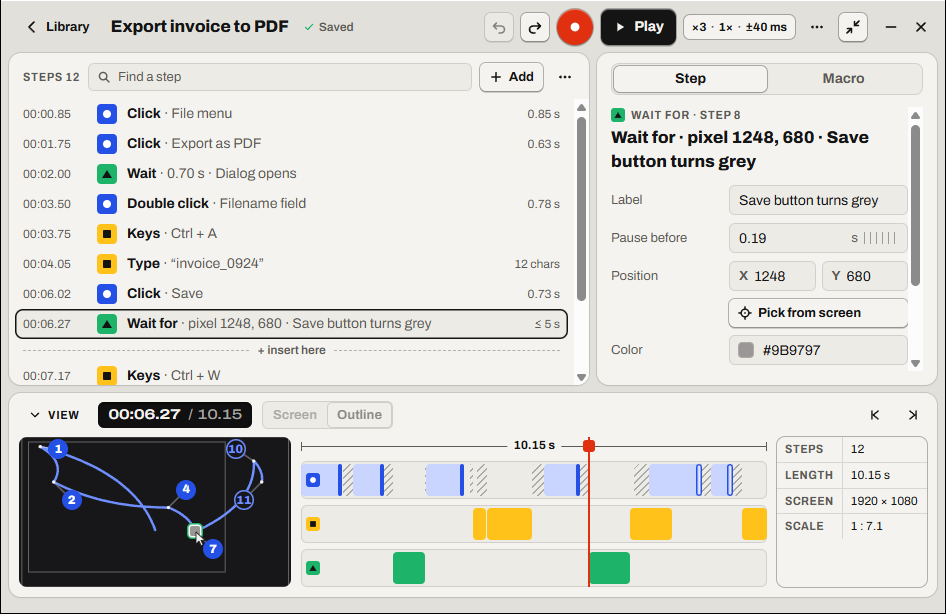
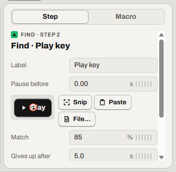
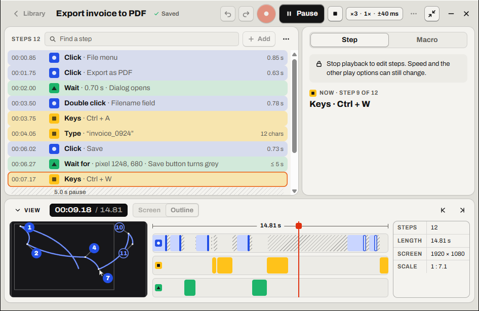

Step 1 · Click
Press record. Do the task. Press Esc.
Relay captures every click, drag, scroll and keystroke with its timing, on every monitor, at any display scaling. A small player counts you in and stays out of your way.

Step 2 · Keys
Read it back as steps.
Not a wall of coordinates: Click · Save, Ctrl + S, “invoice_2026”. Rename steps, cut the pauses, smooth the mouse, undo anything.

Step 3 · Wait for
It waits for the screen, not the clock.
Slow app? Relay waits until a pixel changes or a button appears, at any size, then clicks it.


Step 4 · Trigger
Runs on cue.
A hotkeyMondays at 9:00Every 10 minutesWhen Excel startsWhen a pixel turns redWhen an image appears

Step 5 · Click
Plays anywhere. Stops instantly.
Faster, looped, or slightly varied. Export it as a small .exe for a PC without Relay. Esc stops everything, and nothing is left pressed.
